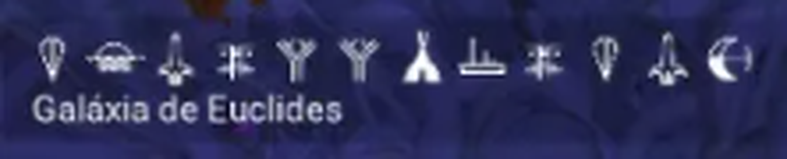

Estes são os glifos de endereço do portal que leva ao território da ΛSTRA-16. Digite-os na ordem, no portal de qualquer sistema, pra chegar até nós.

Encontre um Monólito Alienígena em qualquer planeta pra localizar o portal mais próximo do seu sistema.
No painel do portal, insira os 12 símbolos acima na mesma ordem em que aparecem aqui.
Confirme o endereço e atravesse o portal. Você vai chegar direto ao território da ΛSTRA-16.